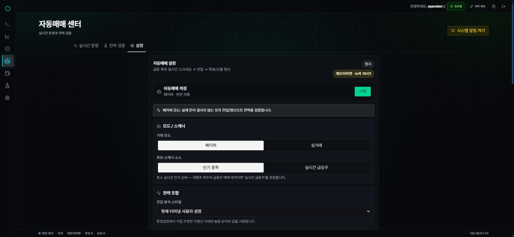

시장을 탐색하고 차트로 확인합니다.
급등 종목을 스캔하고, 종목별 가격 움직임과 기술적 지표를 같은 터미널에서 확인할 수 있도록 구성했습니다. 실시간 시세와 과거 캔들을 이어 붙이는 데이터 처리도 함께 구현했습니다.
PERSONAL PROJECT · 2026.07 —
시세 수집부터 주문 승인과 전략 검증까지,
하나의 흐름으로 연결한 트레이딩 터미널.
개인 프로젝트 · 지속 개선 중

01 / WHY
급등 종목을 찾은 뒤 차트를 확인하고, 진입 조건을 검토하고, 주문 결과를 다시 살펴보는 과정은 서로 이어져 있습니다. 이 과정을 한 화면에서 따라갈 수 있는 도구를 만들고 싶었습니다.
Surge Trader는 미국 주식 급등주 탐색, 기술적 차트, 사용자 승인 기반 주문, 전략 리플레이를 연결한 트레이딩 터미널입니다. 기능을 연결하면서 가장 많이 고민한 것은 “지금 보는 데이터로 다음 행동을 해도 되는가”였습니다.
02 / WHAT I BUILT
급등 종목을 스캔하고, 종목별 가격 움직임과 기술적 지표를 같은 터미널에서 확인할 수 있도록 구성했습니다. 실시간 시세와 과거 캔들을 이어 붙이는 데이터 처리도 함께 구현했습니다.
수동 주문은 미리보기와 확인을 거칩니다. 자동매매가 제안한 주문은 사용자가 승인할 때 최신 가격과 계좌 상태를 다시 확인하고, 제출 이후에도 주문 상태와 체결 이력을 추적합니다.
여러 전략을 같은 종목·같은 캔들로 비교하는 모의 운용과 과거 구간 리플레이를 만들었습니다. 신호가 발생한 시점과 그 이후의 흐름을 나눠 살펴볼 수 있게 했습니다.
03 / ARCHITECTURE
각 화면이 외부 시세를 따로 구독하면 연결과 데이터 처리도 중복됩니다. 서버에서 Alpaca 스트림을 공유하고, 처리한 데이터를 SSE로 각 클라이언트에 전달하도록 구성했습니다.
MARKET DATA
미리보기와 제출 단계를 분리하고, 주문 상태를 추적합니다.
세션, 사용자 설정, 주문 원장을 저장해 상태를 이어갑니다.
감시도 서버가 맡습니다. 서버가 동작하는 동안 브라우저를 닫아도 감시가 이어지며, 서버 시작 시 저장된 활성 설정을 복원하도록 구성했습니다.
04 / DATA INTEGRITY
실시간 스트림에서는 늦게 도착한 틱, 중복 이벤트, 연결이 끊긴 동안의 빈 구간을 함께 다뤄야 했습니다. 화면에 값을 더하는 것만으로는 차트와 판단 기준을 일관되게 유지하기 어려웠습니다.
수신 순서만 따르지 않고 이벤트의 시간과 기존 캔들을 기준으로 병합합니다. 같은 데이터가 다시 들어오는 경우도 처리해 차트 상태를 정리했습니다.
실시간 틱 뒤에 도착한 과거 시세 응답이 최신 캔들을 덮을 수 있었습니다. 요청 시점과 데이터 변경 버전을 구분하는 워터마크를 두고, 이력을 한 번에 병합하면서 실시간 종가와 거래량이 겹치는 경계를 보존하도록 했습니다.
누락 구간은 과거 캔들로 보충하되, 가격이 표시된다는 이유만으로 최신 데이터로 취급하지 않습니다. 데이터가 오래된 상태에서는 관련 진입 판단과 주문 진행을 제한하는 조건을 두었습니다.
실시간 화면의 기준은
“값이 있다”에서 “사용할 수 있는 값이다”로.
05 / APPROVAL FLOW
주문을 검토하는 동안에도 가격과 계좌 상태는 바뀝니다. 자동매매가 제안한 미국 주식 주문은 미리보기 → 사용자 승인 → 재검증 → 제출 → 상태 추적의 단계로 나누어 구현했습니다.
주문 조건을 먼저 구성해 사용자가 검토할 수 있게 합니다.
실주문을 진행하기 전에 사용자의 명시적 승인을 받습니다.
최신 가격, 계좌 상태, 승인 유효성을 다시 확인합니다. 조건이 맞지 않으면 제출을 막습니다.
외부 API를 호출하기 전에 주문 의도를 저장합니다. 같은 요청을 식별하는 멱등성 키를 사용해 반복 제출을 구분합니다.
응답이 없으면 실패로 단정하지 않고 확인이 필요한 상태로 남깁니다. 이후 증권사의 주문별 보고와 대조해 부분 체결을 포함한 진행 상태를 원장에 기록합니다.
응답을 받지 못했어도 주문은 실행되었을 수 있습니다. 이때 바로 재시도하지 않고, 남겨둔 주문 의도와 외부 주문 상태를 대조하는 것이 중요했습니다.
06 / STRATEGY LAB
서로 다른 시점이나 종목에서 얻은 결과만 나란히 놓으면 전략의 차이를 해석하기 어렵습니다. 여러 전략에 같은 종목, 같은 캔들을 입력하는 비교 구조를 만들고, 모의 운용과 리플레이에서 판단 과정을 확인하도록 했습니다.
SAME INPUT
공통 입력 위에서 전략별 신호와 매매 흐름을 비교합니다. 실험마다 전략 설정의 스냅샷을 고정해, 나중에 설정을 바꿔도 어떤 조건으로 실행했는지 남도록 했습니다.
WALK-FORWARD
과거를 검증할 때도 각 판단 시점까지의 데이터만 사용하도록 구간을 나눴습니다. 이후에 알게 된 정보를 앞선 판단에 섞지 않는 것이 핵심입니다.
실험의 입력, 설정, 판단을 다시 확인할 수 있는 환경을 만드는 데 집중했습니다. 모의 운용 결과를 해석할 때는 실제 체결과의 차이도 함께 고려했습니다.
07 / VERIFICATION
테스트 코드와 검증 시나리오는 데이터의 순서가 달라지거나 요청이 반복되는 상황에 초점을 맞췄습니다. 기능이 연결된 만큼, 각 단계가 어떤 조건에서 멈춰야 하는지도 확인할 수 있게 구성했습니다.
08 / WHAT I LEARNED
차트, 감시, 주문, 검증을 함께 만들면서 같은 가격이라도 언제 수집했고 어떤 판단에 사용했는지에 따라 의미가 달라진다는 점을 배웠습니다.
특히 데이터의 최신성, 승인의 유효성, 실행 상태의 기록을 분명히 해야 전체 흐름을 설명할 수 있었습니다. 화면을 만드는 일에서 시작해, 입력부터 실행 결과까지 추적할 수 있는 구조를 설계하는 경험으로 이어졌습니다.
앞으로도 데이터 누락과 재연결 같은 운영 상황을 다듬고, 전략 검증에서 확인할 수 있는 범위와 한계를 더 명확하게 정리하려고 합니다.